penguins7 Intro to ggplot
This week, we’ll move on from summaries to talking about data visualizations (“data viz”), an essential skill for any data journalist. While there are a lot of different ways to make figures and graphs, this chapter will focus on one popular R package for data viz: ggplot.
7.1 Goals for this section
In this chapter, we’ll learn the basics of data visualization using the Grammar of Graphics principles. We’ll start with some smaller datasets to give you a sense of how the code works. And, in the next chapter, you’ll apply this to a dataset we have already used in the class.
Our learning goals are:
- To learn about the Grammar of Graphics
- To make scatterplots
- To make bar charts
7.2 Introduction to ggplot
ggplot2 is the data visualization library within Hadley Wickham’s tidyverse. It is a beast of a package because it supports a whole variety of different types of data visualizations, from bar charts and line charts to fancy choropleth maps and animated figures.
Even though the package is called ggplot2, the function to make graphs is just ggplot(). So, for simplicity, we’ll just call everything ggplot.
The ggplot package relies on a concept called the Grammar of Graphics, hence the gg in ggplot. The basic logic of the Grammar of Graphics is that any graph you could ever want to build will need similar things: a data set, some information about the scales of your variables, and the type of figure or graph that you want to create. These various things can be “layered” on top of each other to create a visually pleasing plot.
Folks who have used Adobe creative programs (e.g., Photoshop, Illustrator, etc.) can think about it like laying an image: each layer in your image should do something to change the image. Likewise, each layer in a ggplot figure will add to the overall graph.
7.2.1 What ggplot is best for
Let me just start by saying that I’m a total ggplot geek. I’ll talk about ggplot figures the way people talk about new TikTok trends. When producing figures and graphs in R, ggplot is the absolute best approach because you’ll see the results right in your notebook. And, basic data visualizations are an absolutely essential skill for any data journalist: it helps you find important things in your data that you may ultimately report on. So, ggplot is important for any R-based data journalism project.
That being said, there are less complicated ways of creating publishable graphics. Tools like Datawrapper and Flourish can produce equally beautiful graphics without the code. So why learn ggplot? Because, (1) ggplot is super useful when you’re just learning about the data and (2) to get good enough in ggplot to make publishable graphics, you have to practice, practice, practice. Yes, ggplot is a big package with lots of nuance. But the more you take the time to learn it, the more you will master it.
7.2.2 The Grammar of Graphics
This section was inspired by Matt Waite and the BBC Visual Cookbook.
As noted above, the gg in ggplot stands for “Grammar of Graphics,” which is a fancy way of saying we’ll build our charts layer by layer. There are three main things you need to make a plot:
- data: You have to tell ggplot the name of the object with your data.
- mapping: Defines how variables in your dataset are mapped to visual properties (aesthetics) of your plot. i.e., which columns are on the x or y axis. We use the function
aes()to describe these aesthetics. - geometries: This how you describe the shape of your visualization, whether it’s lines, bars, points, or something else. We do this through different
geom_()functions.
In addition to these three things, there are lots of helper layers we’ll learn about along the way, including:
- themes (“theme”): this is where you tell R the font you’d like to use, the background color, and other things you want to “pretty up” the data viz.
- coord_flip: a special layer for flipping the chart
- scales: transforming the data to make the plot more read-able
- labels (“labs”): for making titles and labels
- facets: For graphing many elements of the same data set in the same space (one dataset, multiple figures)
This all may seem complicated now, but it’ll make sense once we start putting together these layers together, one at a time. After all, the best way to learn any R package is to do it.
7.3 Start a new project
- Get into RStudio and make sure you don’t have any other files or projects open.
- Create a new Quarto Website project, name it
yourname-ggplotand save it in your rwd folder. - (No need for a folder structure, we’ll do this all in one file.)
- We’ll use our
index.qmdfile for everything for this project, so update the title as “ggplot practice”, remove the boilerplate and create a setup section that loadslibrary(tidyverse)andlibrary(janitor), like we do with every notebook.
The ggplot package is a part of tidyverse, so we don’t need to do anything special there.
7.3.1 Install palmerpenguins
For this lesson, we will install a new R package, which will give us access to some data to work through some visualization techniques. I’d like you to meet the Palmer Penguins …

The palmerpenguins package includes scientific measurements of penguins observed on islands in the Palmer Archipelago near Palmer Station, Antarctica. The package and the awesome artwork is maintained by Allison Horst. It’s also a great one for data exploration & visualization so we’ll use it to learn about ggplot.
Let’s install and load it.
- In your Console, run
install.packages("palmerpenguins"). - In your setup section, add the library and rerun the chunk:
library(palmerpenguins)
Remember you only have to install a package once on your computer, but you should load the library at the top of each notebook that uses it. (i.e., don’t leave the install.packages() part in your notebook.)
7.4 The layers of ggplot
Note
Much of this first plot explanation comes from Hadley Wickham’s R for Data Science, with edits to fit the lesson here.
Before we dive into ggplot, let’s peek at our data.
- Start a new section “First plot”
- Add some text that you are studying pretty penguins.
- Add a code chunk like below and run it to see what the
penguinsdataset looks like.
As noted above, the data are measurements from a number or penguins, things like species, sex, bill length, etc.
Among the variables in penguins are:
flipper_length_mm: length of a penguin’s flipper, in millimeters.body_mass_g: body mass of a penguin, in grams.species: a penguin’s species (Adelie, Chinstrap, or Gentoo).
With these variables, we’ll explore the relationship between flipper lengths and body masses of these penguins, taking into consideration the species of the penguin.
7.4.1 Our goal chart
Our goal is to recreate this chart:
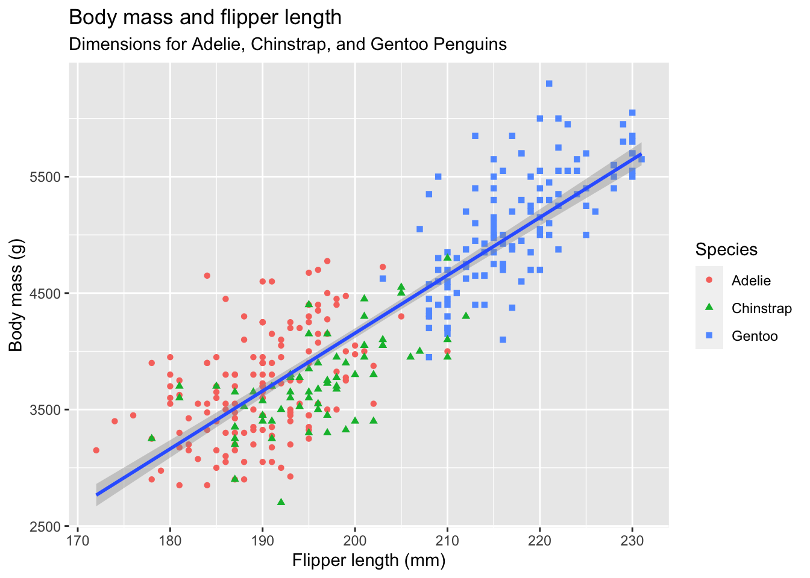
7.4.2 1st: the data
When working with the ggplot2 package, you’ll start nearly every figure with the ggplot() function. In the ggplot() function, you’ll tell R what data you’re using, and the coordinate system you want to build based on the data.
The first thing you’ll want to do is tell ggplot the dataset you want to use (in this case, penguins). Let’s do that now.
- Edit your first plot section,
- Make a new code chunk and add the code below.
ggplot(penguins)
This tells us… absolutely nothing! But that’s not surprising: you haven’t even told ggplot what variables you want to focus on or the way you want to visualize the data. To do that, you’ll need a mapping argument.
7.4.3 2nd: Map the data
We use the aes() (short for “aesthetic”) to describe which data to plot and where. This is considered a mapping argument, because you use this argument to tell ggplot how you want to map your data.
The workhors of aes() is to indicate the variable to plot horizontally (the x axis) and vertically (the y axis). So your aes() argument will look something like this: aes(x = some_variable, y = another_variable).
In our case, set our flipper_length_mm (the flipper length) for x and body_mass_g for y:
- Edit your code to add the following line of code. Note I’ve rearranged the indenting, too.
ggplot(
penguins,
aes(x = flipper_length_mm, y = body_mass_g)
)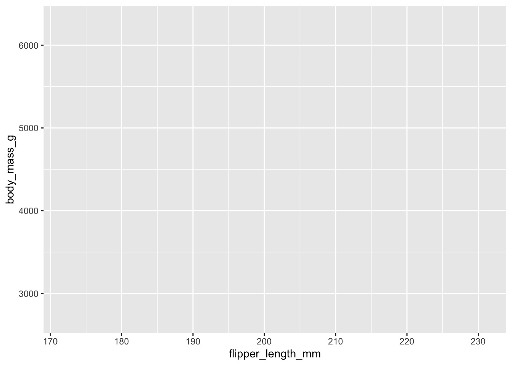
We are getting closer! The plot knows what data we are using and the “range” of that data, so it has added tick marks and values along our x and y axes.
7.4.4 3rd: geometries
Now that we know which data to apply, we have to make a choice on how we want to show the shape of that data on our plot, and we do that through geometries (or “geoms” as we call them.) We’ll talk about different ones in a minute, but we’ll start with plotting our data as points.
This is our first added layer on our chart, and therefore introduction of the + option within ggplot. We use + to add on layers of information in our grammar of graphics. It’s sort of like the pipe |> in the way it works, but we use + when adding ggplot layers.
- Edit your chunk to add the
+and thegeom_point()functions as noted below.
(I really recommend you type the additions so you can see how RStudio helps fill the code.)
- 1
-
Don’t forget the
+here - 2
-
The
geom_point()plotted dots based on the values set in ouraes()function.

OK, now we are getting somewhere. We can see each penguin plotted on the chart, and we can generally see that as the birds get heavier (higher on vertical axis) their flippers are also longer (to the right on the horizontal axis.)
Note
We do get this warning: Warning: Removed 2 rows containing missing values geom_point(). This is telling us there are two rows of data that don’t have one of the two values, so they were dropped. Like R, ggplot2 subscribes to the philosophy that missing values should never silently go missing. As journalists, we just need to make sure we know why something is missing and note if it is important.
7.4.4.1 Other geometries
There are many geoms, but here are a few common ones:
geom_point()adds dots onto the grid based on the data. We used them above.geom_line()adds lines between data points on the grid. Basically a line chart.geom_col()andgeom_bars()adds bars to the grid based on values in the data. A bar chart. We’ll usegeom_col()later in this lesson but you can read about the difference between the two in a later chapter.geom_text()adds labels based on values in the data.
7.4.5 Chart code review
Let’s review the different parts of this code. Note I’ve rewritten it a bit here to put some arguments on their own line so it is more readable.
- 1
-
ggplot()is the function we use to make a chart. - 2
-
Inside of
ggplot()the first argument is the data, in this case thepenguinsdata. - 3
-
The second argument is the
aes()function, where we apply our aesthetics. Aesthetics describe how we will paint our data onto the plot. Inside of this function, we set values for thexandyaxis so we know WHERE to paint. There are some other aesthetic values we can paint with data, and we will. - 4
-
Lastly we add on a layer (with
+on the previous line) to addgeom_point()to paint “points” on top of the plot based on the set aesthetics. (It’s like pointillism.)
Important
You might see this same code written different ways. Let’s talk about why.
Verbose arguments
ggplot(data = penguins,
mapping = aes(x = flipper_length_mm, y = body_mass_g)) +
geom_point()The above version adds data = and mapping = to the first two arguments. It is the official descriptive way to do this, and how Hadley Wickham describes it in R for Data Science. But, since the first argument can assumed to be the data we often don’t include it unless it unless we are trying to differentiate with different data used later. Same goes for mapping = … we don’t specify it unless necessary.
Piping into ggplot
penguins |>
ggplot(aes(x = flipper_length_mm, y = body_mass_g)) +
geom_point()In this case we start with the data AND THEN pipes it into ggplot() as the first argument. Prof. McDonald often does it this way. The scoundrel.
7.4.6 Global vs local aesthetics
Our initial plot appears to show that flipper length is related to the weight of the penguin, but it’s always a good idea to be skeptical of any apparent relationship between two variables and ask if there may be other variables that explain or change the nature of this apparent relationship. For example, does this relationship exist for all three species?
Let’s color our points based on the species to see.
- Edit your plot and add the color mapping to the
aes()function, like below. NOTE I’ve also rearranged some of the code to make it more readable.
ggplot(
penguins,
aes(x = flipper_length_mm,
y = body_mass_g,
1 color = species)
) +
geom_point()- 1
- This is the line where you are adding color.

When a categorical variable like the species is mapped to an aesthetic, ggplot will assign a color to each unique value and add a legend so you can tell them apart.
Let’s add another layer: a smooth curve displaying the relationship between body mass and flipper length. Since this is a new geometric object representing our data, we will add a new geom as a layer on top of our point geom: geom_smooth(). And we will specify that we want to draw the line of best fit based on a linear model with method = "lm".
- Edit your code to add on the last layer shown here:
ggplot(
penguins,
aes(
x = flipper_length_mm,
y = body_mass_g,
color = species)
) +
geom_point() +
geom_smooth(method = "lm")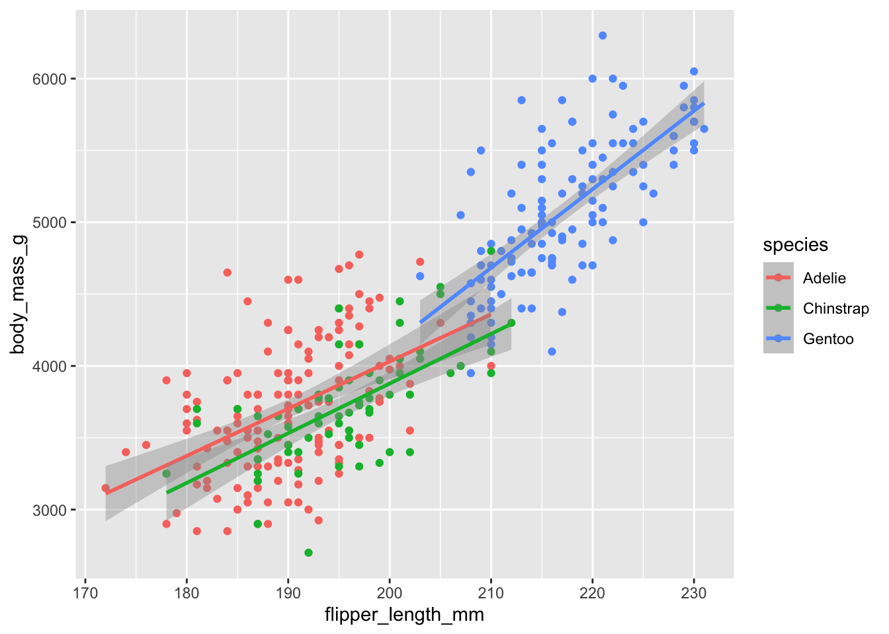
We’ve added the lines, but it doesn’t look like our “goal” graphic we started with in Section 7.4.1, which only has one line instead of three separate lines for each of the penguin species.
When we set the x, y and color aesthetics in our code, we set them at the global level. All those characteristics apply to every added layer. However, each geom function can have it’s own aesthetics, setting them at the local level, applying to only that layer.
Let’s show this by moving our color aesthetic from the global level to apply just at the point level.
- Edit your code to move the
color = speciesbit from the global aesthetics to a local aesthetic withingeom_point(), as shown below.
ggplot(
penguins,
aes(x = flipper_length_mm,
1 y = body_mass_g)
) +
2 geom_point(aes(color = species)) +
geom_smooth(method = "lm")- 1
-
This is the line where we remove the
color = speciesfunction. - 2
-
This is where we add it back, creating an
aes()function insidegeom_point()so it only applies to that geom.
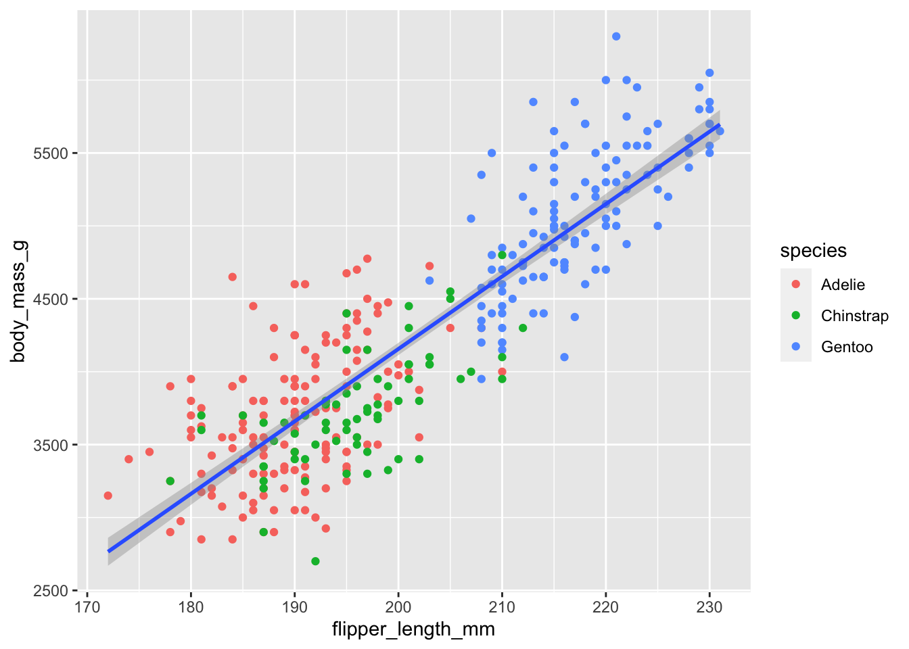
OK, this is looking pretty good, but it is not a great idea to represent information using only colors on a plot, as people perceive colors differently due to color blindness or other color vision differences. We can improve readability of this chart of we also map species based on the shape aesthetic.
- Edit your code to add
shape = speciesaesthetic to thegeom_point()function, as shown below.
ggplot(
penguins,
aes(x = flipper_length_mm,
y = body_mass_g)
) +
1 geom_point(aes(color = species, shape = species)) +
geom_smooth(method = "lm")- 1
-
We add the
shape = speciesargument here inside theaes()function.
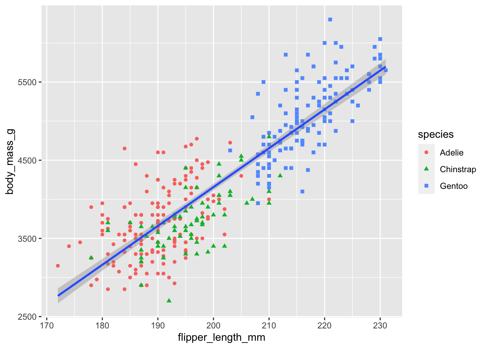
7.4.7 Labels
In addition to geoms, you can adjust and add labels (text layers) to our plot.
Labels (or labs, since we use the labs() function for them) are a series of text-based items we can layer onto our plots like titles, bylines and axis names.
Like geom_point() above, we’ll use the + at the end of each line before we add another layer.
Let’s add a labels layer so we can describe our chart to our readers. Note there are a number of arguments available in labs(), even more than those listed here.
- Edit your code to add the
labs()layer indicated below.
ggplot(
penguins,
aes(x = flipper_length_mm, y = body_mass_g)
) +
geom_point(aes(color = species, shape = species)) +
geom_smooth(method = "lm") +
1 labs(
2 title = "Body mass and flipper length",
3 subtitle = "Dimensions for Adelie, Chinstrap, and Gentoo Penguins",
4 x = "Flipper length (mm)", y = "Body mass (g)",
5 color = "Species", shape = "Species"
)- 1
-
We start with the
labs()function and open it up to write many arguments inside. - 2
-
titlegives us a headline. - 3
-
subtitleis a readout under the headline. We sometimes need to wrap the text in astr_wrap()function to keep it from running out of the chart. - 4
-
The
xaxis already had a label on our chart by default, but it was the not-very-print-friendly name of the variable. Fine for us because we know what it is, but here we are replacing that with text more appropriate for a reader. We do the same with theylabel. - 5
-
The
colorandshapearguments are similar in that we are replacing the existing label above the legend, resetting those to capitalize “Species”. We need to change them both so they are the same. (You might experiment by removing theshapeargument and re-running it to see what happens.)

7.4.8 An aside: Titles and subtitles
Our example chart here is a scientific figure designed to show the relationship between the length of flippers to the body size of penguins, and that perhaps the relationship holds true among different species. It is not a good example of a journalistic chart.
We want our chart titles to be MORE THAN A LABEL … they should communicate something and further the story we are trying to tell with the plot. They should have a verb! If we were telling a story here, we might try: Flippers longer on heavier penguins.
Our subtitles should provide the context necessary to understand what we are looking at and why. The combination of the title and subtitle should stand alone to tell enough of this story that we don’t have to go elsewhere (like story) to understand it. A journalistic model might be something like this: Dr. Kristen Gorman studied three species of penguins at the Palmer Long-Term Ecological Research station in Antarctica between 2007 and 2009, recording basic biographical measurements nearly 350 animals.
7.4.9 Themes
You can change just about anything on a ggplot chart if you know the function and arguments to describe it. The cheetsheet shows a lot of them, but it can get really dense.
Themes are collections of these visual changes saved into a single function. There are several available within ggplot and many others from the R community.
Let’s show that here.
- Edit your code chunk to add on the last
+ theme_minimal()function.
ggplot(
penguins,
aes(x = flipper_length_mm, y = body_mass_g)
) +
geom_point(aes(color = species, shape = species)) +
geom_smooth(method = "lm") +
labs(
title = "Body mass and flipper length",
subtitle = "Dimensions for Adelie, Chinstrap, and Gentoo Penguins",
x = "Flipper length (mm)", y = "Body mass (g)",
color = "Species", shape = "Species"
) +
theme_minimal()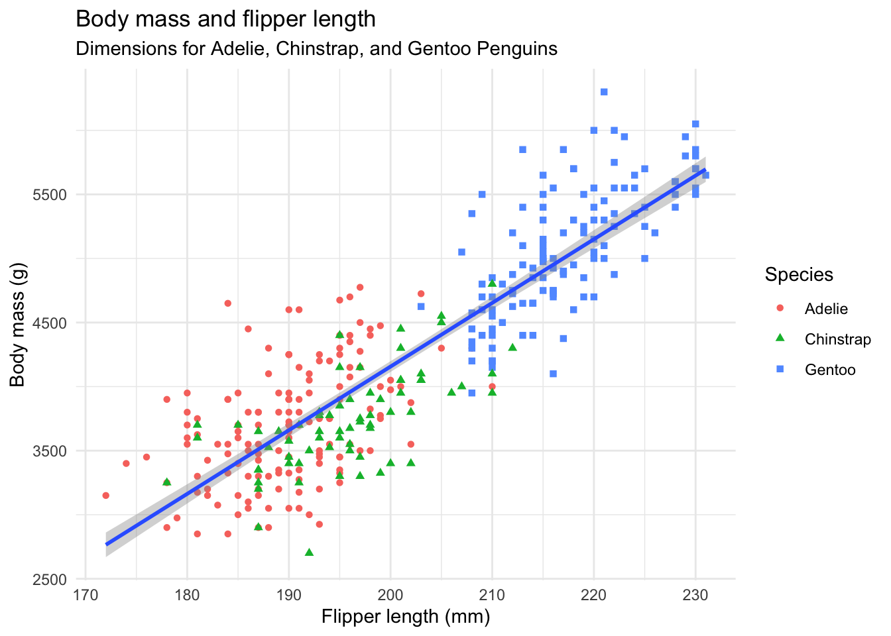
This changes the background color and grid lines to make the data pop a little better. There are other themes that create more radical change, some in their own packages. We’ll play more later.
OK, you’ve made your first ggplot chart! Are you ready to make another?
7.5 Let’s build a bar chart
In our first week of class, we sent out a survey where you told us your favorite Disney Princess and favorite flavor of ice cream. Let’s now play around with some of this data.
For this lesson, we’re not going to create a different notebook or download the data to our computer. Instead, we’re going to save the data directly into a tibble.
- Start a new section: Importing class data
- In the text, note that we are importing the chart data.
- Add the code below to get the data.
1class <- read_csv("https://docs.google.com/spreadsheets/d/e/2PACX-1vQfwR6DBW5Qv6O5aEBFJl4V8itnlDxFEc1e_-fOAtBMDxXx1GeEGb8o5VSgi33oTYqeFhVCevGGbG5y/pub?gid=0&single=true&output=csv") |>
2 clean_names()
3class- 1
- We create a new object and then fill it by reading the data directly from the web.
- 2
-
We lowercase the variable names using
clean_names()from the janitor package. - 3
- Print the new object to peek at it.
So, now, you should have the data in your environment.
And with this data, we want to build a chart like this:
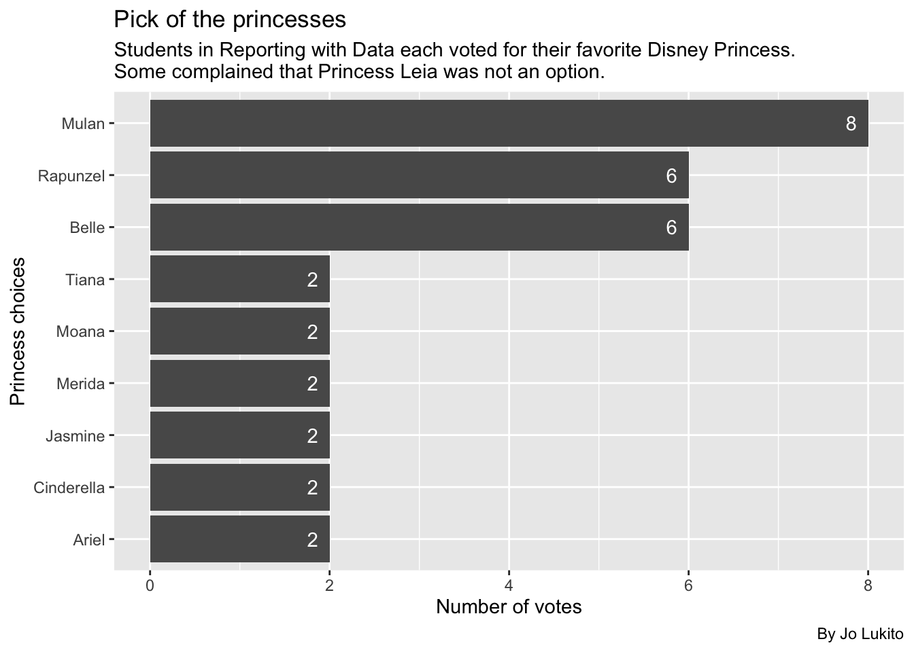
7.5.1 Prep princess data
While there are ways for ggplot to calculate values from your data on the fly, I prefer to first build a table of the values I want, and then I will plot it on a chart. It’s helpful to think of these steps as separate so you have a good workflow (clean the data, prepare the data in a table form, and then plot the data).
Today, our goal will be to make a bar chart, sometimes known as a column chart. This bar chart will show the number of votes for each princess from the data. So, we need to count the number of rows for each value … our typical group_by/summarize/arrange (GSA) process.
For this lesson, I’ll use the count() shortcut, since we haven’t used it much. Next, I’ll save the summarized data into a new dataframe called princess_data. Follow along in your notebook:
- Add a section: Princess data
- Add text that you are creating a data frame to plot.
- Add the code below to create that data.
- 1
- Start with a new object and start filling it with class data.
- 2
-
Here we use the
count()function to count the number of rows based on theprincesscolumn. The argumentname =just names the new columns something other thann, and thesort =argument sorts the data in descending order based on the counted column. - 3
- Print it out so we can see it.
At this point, y’all should be plenty familiar with these summary functions, and the output should be easy to interpret: we’re just counting the number of rows for each princess.
Now that we have our table data, let’s actually plot it.
7.5.2 Build our plot with geom_col
Like in the previous lesson, we’ll start our plot by creating the first layer: the ggplot() function, which takes the data as its first argument and the aes() mapping layer as its second argument.
- Add some text noting that you’ll now plot.
- Add the following code chunk, which is the first layer
You’ll see the grid and x/y axis of the data, but no geometries are applied yet, so you won’t see any data. But remember, we’re adding these all in layers.
7.5.3 Add the geom_col layer
Now it is time to add our columns. To do this, we’ll use geom_col(). Similar to geom_point(), geom_col() adds a geometric layer that tells R how to display the data (in this case, with columns as opposed to points). Let’s write this code now.
- Edit the plot code to add the ggplot pipe
+and on the next line addgeom_col().
- 1
-
Don’t forget to add the
+at the end of the previous line - 2
-
The
geom_col()function adds the bars based on the global aesthetics we’ve already set.
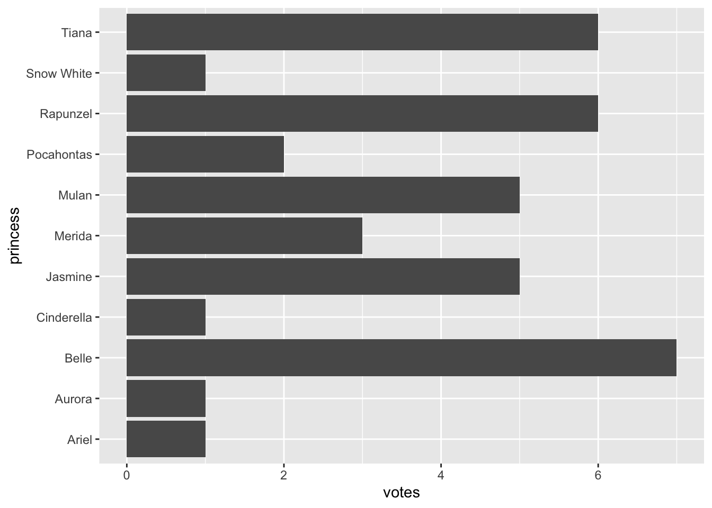
Our two-layer chart is getting somewhere now. We’re able to see the data in the plot, but there are a couple issues:
- Depending on the width of our notebook, the princess names might collide with each other. We can fix this.
- The order of the bars is alphabetical instead of in vote order. Again, we can fix it.
7.5.4 Flip the axes
One way to fix the labels is to “flip” the axes, so the x axis becomes the y axis and vice versa. This is the equivalent of rotating the whole figure. When we do this, the axis will turn sideways, making it easier to read the labels. Worth noting: this can be a bit confusing later because the “x” axis is now going up/down (as opposed to left and right).
Let’s learn how to flip the axes now. We’ll do this by adding a new layer, coord_flip(), which is a special layer that flips the axes. Just like we added the previous geom_col() layer using +, we’ll do the same thing here. Let’s do that now.
- Edit your plot chunk to add the ggplot pipe
+andcoord_flip()on the next line.
ggplot(
princess_data, aes(x = princess, y = votes)
) +
geom_col() +
1 coord_flip()- 1
-
Adding
coord_flip()swaps the x and y axes.
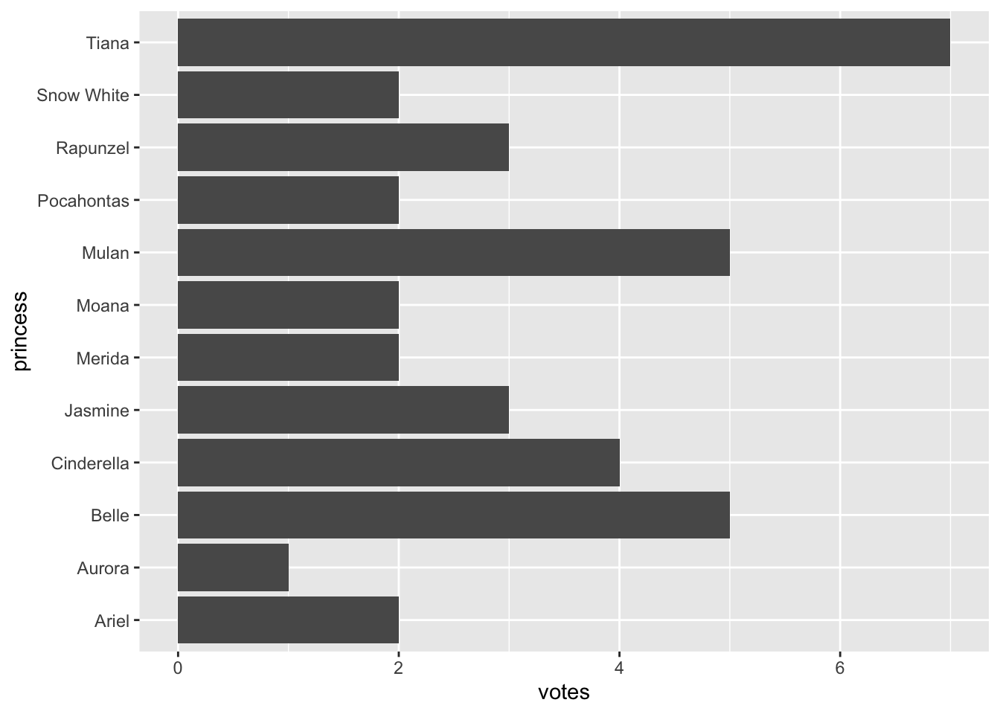
As you can see, rather than having vertical bars, we now have horizontal bars, and the names of each princess are fully displayed and read-able. Much better!
But the bars are still in an alphabetical order, as opposed to a vote order, so let’s fix that now.
7.5.5 Reorder the bars
The bars on our chart are in alphabetical order of the x axis (and reversed thanks to our flip.) We want to order the values based on the votes in the data.
Note
Complication alert: Categorical data can have factors, which are like an internal ordering system. Some categories, like months in a year, have an “order” that is not alphabetical. We don’t have that here, but know it is a thing.
We can reorder our categorical values in a plot by editing the x values in our aes() using reorder(). (There is a tidyverse function called fct_reorder() that works the same way for factors.)
reorder() takes two arguments: The column to reorder, and the column to base that reorder on. It can happen in two different ways, and I’ll be honest and say I don’t know which is easier to comprehend.
x = reorder(princess, votes)says “we shall set x as reordered values ofprincessbased on the order ofvotes. OR …x = princess |> reorder(votes)says “set the x axis asprincessand then reorder byvotes.
They both work. Even though I’m a fan of the tidyverse |> construct, I’m going with the first version.
- Edit the first line of your chunk to reorder the bars.
ggplot(
princess_data,
1 aes(x = reorder(princess, votes), y = votes)
) +
geom_col() +
coord_flip()- 1
-
This is the line where
reorder()is added.
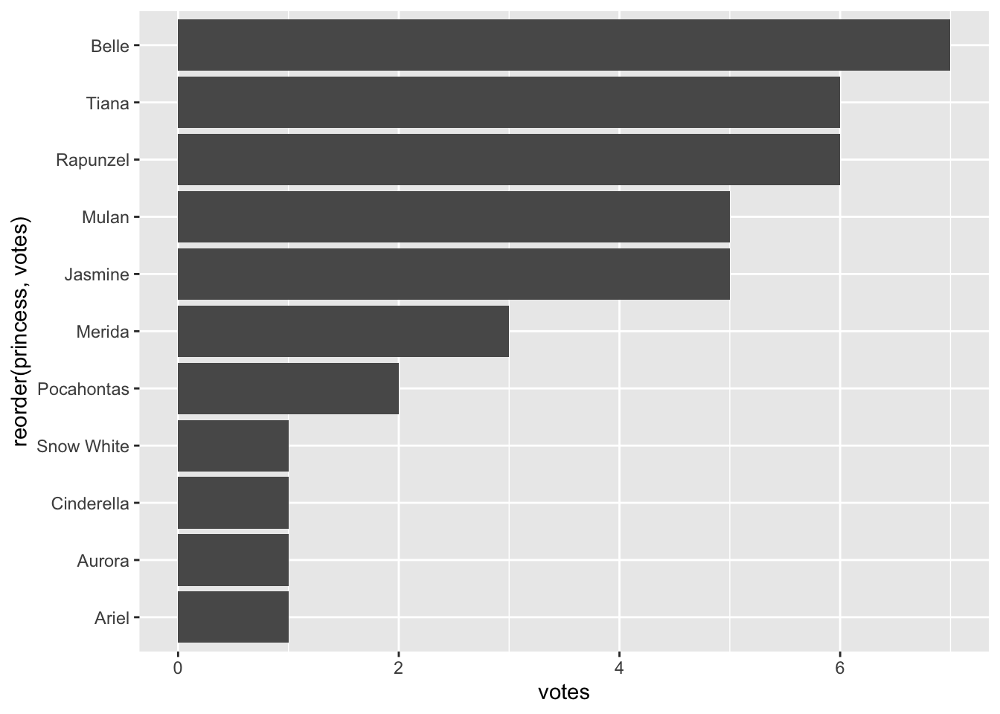
So now, our princess names are read-able, and the bars are organized in vote size. But what if we wanted to be clearer in our figure, so that we knew the exact number of votes for each princess? Let’s learn how to add this information.
7.5.6 Adding a geom_text layer
Now, we’re really starting to take advantage of the grammar of graphics by including more than one geometric layer. Specifically, we’ll be using geom_text() to add some information to our bar charts.
As we mentioned previously, geom layers can take individual aesthetics (that build on top of the global aesthetics you put in the first layer). When using geom_text(), we’ll include some local aesthetics using the aes() argument, to tell ggplot the label we’d like to add to the plot.
- Edit your plot chunk to add the
+andgeom_text()layer on the end of your code. - Set the aesthetics of the
geom_text()function to plot the labels onto the chart based on the number ofvotes:aes(label = votes), as noted below.
ggplot(princess_data,
aes(x = reorder(princess, votes), y = votes)
) +
geom_col() +
coord_flip() +
1 geom_text(aes(label = votes))- 1
-
This plots a text layer onto the chart based on both the position and values in
votes.
Well that did… something. We’ve successfully added the numbers to this plot, but it’s not very pretty. First, the number is plotted at the end of the bar, making it harder to read. So we’ll want to horizontally adjust this by shifting the numbers a bit to the left. Second, black text is really hard to read against a dark grey background. So we’ll change the text of the number to white.
We can make both of these edits directly in the geom_text layer.
- Edit the last line of your plot chunk to add two new arguments.
- The first argument you will add is
hjust, which moves the text left. (hjuststands for horizontal justification.vjust, or vertical justification, would move it up and down). - The second argument you will add is
color, which tellsggplotwhat the color of your text should be.
As a reminder, you should always separate your arguments within a function using commas (,).
ggplot(
princess_data,
aes(x = reorder(princess, votes), y = votes)
) +
geom_col() +
coord_flip() +
1 geom_text(aes(label = votes), hjust = 2, color = "white")- 1
-
Note that both
hjustandcolorare NOT inside theaes()function because we are not using the data to control them.
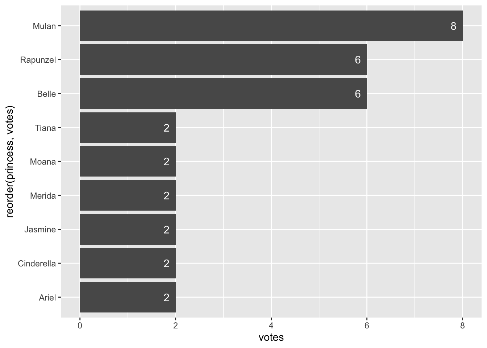
Great! But we’re still not done. Even though we’ve added labels to each bar chart, we still haven’t added a title, and the titles of our x and y axes are not great. So let’s work on those now.
7.5.7 Add some titles and more labels
Now that we have a chart, with some information displayed in bars, flipped and arranged so we can see information, let’s add to this by giving the chart some labels. We’ll do this by adding a layer of labels to our chart using the the labs() function. We can add and change a number of things with labs(), including creating a title, and changing the x and y axis titles.
- Edit the last line of your plot chunk to add the ggplot pipe
+andlabs()in the next line. - Add a title using the
title =argument - Add a subtitle using the
subtitle =argument. This is a great place to put information about your data (like when it was collected). - Add a caption using the
caption =argument. Put your byline here! - Change the x and y axes titles using
x =andy =.
ggplot(
princess_data,
aes(x = reorder(princess, votes), y = votes)
) +
geom_col() +
coord_flip() +
geom_text(aes(label = votes), hjust = 2, color = "white") +
labs(
1 title = "Pick of the princesses",
2 subtitle = str_wrap("Students in Reporting with Data each voted for their favorite Disney Princess. Some complained that Princess Leia was not an option."),
3 caption = "By Jo Lukito",
4 x = "Princess choices",
5 y = "Number of votes"
)- 1
- A title to draw you in or communicate your goal.
- 2
-
The subtitle is the place to explain what is needed to understand the chart. In this case we wrap the text in a
str_wrap()function so the words don’t run off the chart. - 3
-
A
captionis a cood place to add your byline. - 4
-
Because we use
coord_flip()it is actually thexaxis that is vertical. - 5
- Again, x and y are flipped.

There you go! You’ve made a chart showing how our classes rated Disney Princesses.
7.6 On your own: Ice cream!
Now it is time for you to put these skills to work:
- Build a chart about the favorite ice creams from RWD classes.
Some things to consider:
- You need a new section, etc.
- You’re starting with the same
classdata - You need to prepare the data based on
ice_cream(which is the name of a variable in yourclassdata frame) - You need to build the chart, paying attention to axis
It’s essentially the same process we used for the princess chart, but using ice_cream variable. That said, I really recommend you write all the code from scratch, ONE LINE AT A TIME, so you can soak in what each line does.
7.7 What we’ve learned
There is a ton, really.
- ggplot2 (which is really the
ggplot()function) is the charting library for the tidyverse. This whole lesson was about it. - We also covered
reorder(), which can reorder a variable based on the values in a different variable.
Here are some more references for ggplot:
- The ggplot2 documentation and ggplot2 cheatsheets.
- R for Data Science, Chap 3. Hadley Wickham dives right into plots in his book.
- ggplot2: Elegant graphics for Data Analysis by Wickham.
- R Graphics Cookbook has lots of example plots. Good to harvest code and see how to do things.
- The R Graph Gallery another place to see examples.